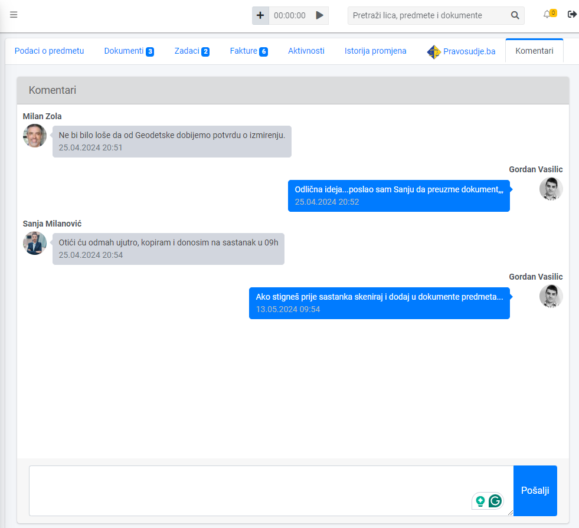
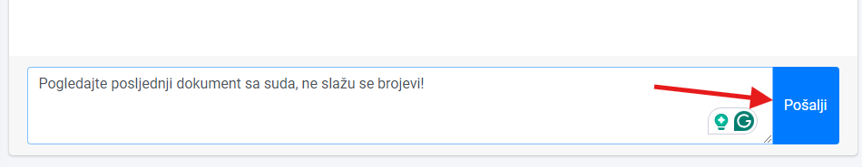
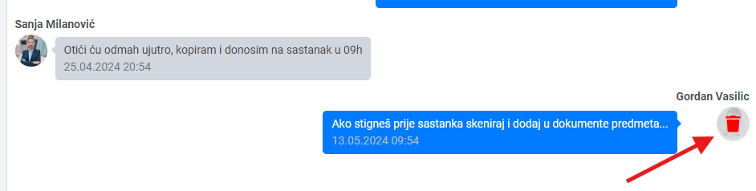

Dodavanje komentara unutar predmeta vam omogućava da otvorite dijalog sa svojim saradnicima direktno unutar predmeta, istovremeno olakšavajući komunikaciju i unapređujući efikasnost.
Evo kako će vam ova nova funkcionalnost pomoći u vašem svakodnevnom radu:
- Transparentna komunikacija: Sada, umesto razmjene e-mailova ili telefonskih poziva, možete lako komunicirati unutar samog predmeta. To znači da svi uključeni u slučaj mogu pratiti diskusiju u realnom vremenu i ostati informisani o svim relevantnim detaljima.
- Brže donošenje odluka: Diskusije unutar predmeta olakšavaju donošenje bržih odluka. Svi uključeni mogu brzo deliti ideje, predloge ili komentare, što doprinosi efikasnijem rešavanju slučajeva.
- Arhiviranje i istorijsko praćenje diskusije: Svi komentari unutar predmeta su arhivirani i lako dostupni, što olakšava praćenje istorije komunikacije i utvrđivanje toka diskusije
Dodavanje komentara #
Otvorite željeni predmet, i kliknite na karticu Komentari. U polje za poruku upišite komentar i kliknite na dugme Pošalji:

Brisanje komentara #
Prevucite kursor miša na ikonu korisnika pored poruke koju želite obrisati i pojaviće se opcija za brisanje komentara:
